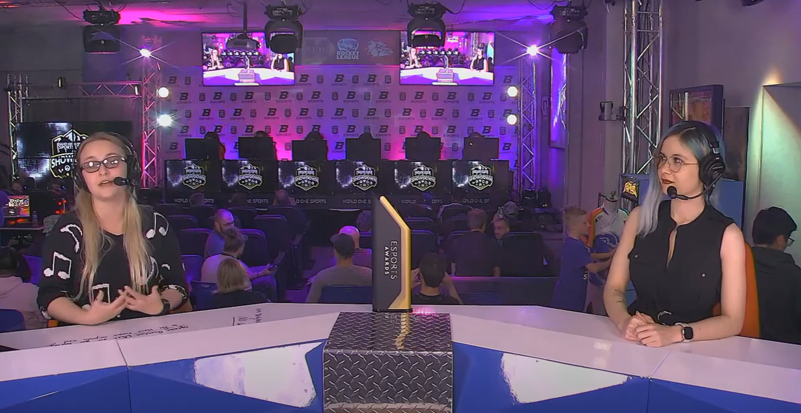
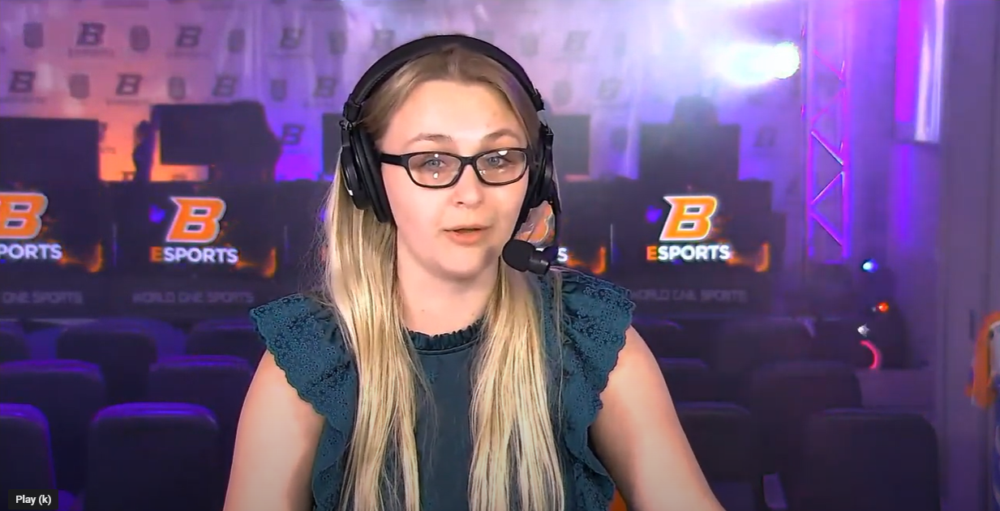

Overwatch is my main game to cast and play, and as such it is always a joy to create more Overwatch content for Boise State University. My casting name is Kolby "DiAngelo" Alloway, following the trend most eSports casters go by of Fistname "Gamertag" Lastname. My typical partner for Overwatch content is Brenner "BrennerBear" Ladd, and we did this showdown together as well. The Idaho Highschool Showdown was a full weekend-long event, and day 2 had games like Smash Brothers, Rocket League, Overwatch and League of Legends. Watch the full day 2 broadcast of the Idaho Highschool Showdown here!
This is day one of the Idaho Highschool Showdown, which was a weekend-long event that took place on Friday and Saturday. Day one included Rocket League, Valorant, and Smash Brothers. My casting partner for this broadcast was Artemis "N3rdybird" Rainn, and though we had never casted together before, working with them was an absolute joy. Watch the full day 1 broadcast of the Idaho Highschool Showdown here!
This was my first time solo casting! That means it was just me on desk, and I had no color caster for that day. Boise State was going against one of their long-time rivals in eSports, UCI, and the games were close all night. Watch the full cast to find out who won!